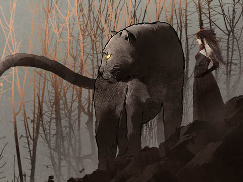
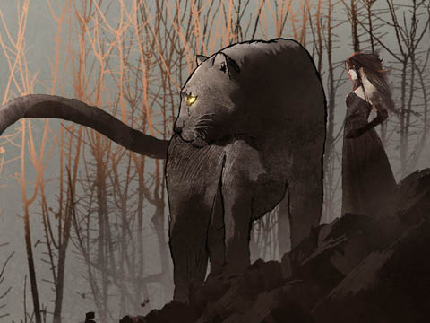

- はじめに
- 【１】ドラゴンクエスト
- 【２】ファイナルファンタジーII
- 【３】半熟英雄
- 【４】ふぁみこん昔話 遊遊記
- 【５】クインティ
- 【６】MOTHER
- 【７】タクティクスオウガ
- 【８】サクラ大戦
- 【９】World of Warcraft
- 【10】When the Past Was Around
- 奥付
はじめに
24歳のころにゲーム業界に入り、36年が経ちました。 ゲームの前はアニメーターや漫画のアシスタントをするグラフィック系だったのですが、ゲーム業界に入ってからはもっぱらスクリプトでエフェクトを動かし、キャラを動かし、キャラを動かすついでにシナリオも書き、そうこうしているうちにいつの間にか肩書はシナリオライターになっていました。 ゲームのシナリオについてあれこれ考察するようになったのは最近になってからです。もちろん、キャリアが長いので「最近」と言っても15年あたり前はまだ最近なのですが、今回はゲームの歴史に沿ってゲームシナリオの変化を眺めつつ、愛したゲームについて語ろうと思います。 とは言え、学術的な話が先ではなく、あくまでも「好き」が先です。よって、学術的には「好き」のためにねじ伏せた部分もあるかと思います。なので、思想的な背景を持ち出しているところは、あまり真に受けず、そういう見方もあるのだな、程度に流してもらえると助かります。そしてまた、言及する人物はすべて敬称略で書かせていただいておりますが、そちらも寛大に見逃していただければ気持ちが楽になります。 と――では、気も楽になったところで、始めますか。
【１】ドラゴンクエスト
アニメに詳しい方なら、辻真先という脚本家をご存知のことと思う。『エイトマン』、『鉄腕アトム』の時代から90年代まで、数多くのアニメ脚本を手掛けた人物だが、その作風は当時学生だった私の印象には、あまり強く残っていなかった。同じ頃に見ていた金春智子の自己言及気味の早口のモノローグや、井上敏樹の主人公の動機の強さは印象に残っているが、「辻真先の作風」と言われてもピンとくるものがない――というのが恥ずかしながら、私がゲームの脚本家として過ごした四半世紀の総括になる。 その辻真先が手掛けた作品を最近になって見返すことがあったのだが、そのとき、「ドラゴンクエストに似ている」という印象を受けた。 似ているのはドラゴンクエストだけではない。当然のように漫画やアニメの『ドラゴンボール』にも似ている。だがそれももっともな話で、要は辻真先が手掛けたアニメの影響がいまの漫画やゲームに受け継がれているのだ。当時、その印象がなかったのは、すべてのアニメが辻真先的だったからだ。 さて、ドラゴンクエストであるが、これほど大衆化したゲームを今更語ることにどんな意義があるのかと思われるかもしれないが、ひとつ留意してほしいのは「日本で、ドラゴンクエストに先行する剣と魔法のファンタジーものの物語が存在しない」という点である。 これはゲームに限った話ではなく、アニメや漫画でも同様だ。『BASTARD!!』や『アルスラーン戦記』はそれよりも後であるし、あるとしたら『クリスタル☆ドラゴン』、『ピグマリオン』を挙げられなくもないが、ドラゴンクエスト以降の正統派中世ファンタジーとは毛色が異なる。また、当時はクトゥルフ神話体系も、小説にこそ影響は見られたが、漫画やアニメへの影響はほとんどなかった。その、前触れのない状態から登場したのがドラゴンクエストだった（※注１）。 そしてもうひとつ、ドラゴンクエストには「作品がシンプルである」という異様な特徴がある。これも普通に聞けば「最初のバージョンだからシンプルなのはあたりまえだろう」と思われるだろうが、『ウルティマ』や『ウィザードリィ』という海外の先行作品の影響を受けながら、あそこまでコンパクトに作品を仕上げるのは、普通の感覚ではない。そもそもウルティマもウィザードリィもパーティ制であり、戦士、僧侶、魔法使いがいるからゲームとして成り立っていたのだ。それを勇者一人でゲームとして成立させろと言われたら、いまのゲームデザイナーの多くは途方にくれる。「何かを足す」才能に長ける人は多いが、「小さくして成立させる」人は限られる。 そんななかドラゴンクエストは、漫画のようなアレンジによって功を奏した。当時の漫画やアニメに近い語り口と鳥山明のキャラクターは、『アーサー王伝説』や『指輪物語』を下敷きとしたウルティマやウィザードリィとの強いコントラストを描きだしていた。 当時の海外のＲＰＧは、そもそもパソコンで遊ばれているものだった。果たして堀井雄二は、容量の限られたファミコンでそれを再現しようと考えただろうか。おそらく、そうでもないだろう。それらを下敷きにした自分たちなりの何かが生まれたらそれでよかったのだ。そのスタンスでいたからこそ、コンパクトながらも万人に受けるものを仕上げることができた。ラスボスの竜王は「手を組めば世界の半分をくれてやる」ともちかけてくるが、これも漫画を知り尽くしているからこそ書けるテキストではないかと感じる。 また、ドラゴンクエストの制作を支えたのが週刊少年ジャンプである点も異様なことであった。雑誌は通常、流行ったものを後から取り上げるのである。まったく前例のないものにゼロの状態からコミットするというのは、ありえない話だ。少年ジャンプと言えば「集英社の少年誌」として知られているが、その編集を手掛けたのは「創美社」という子会社である。大出版社の大きな意思によってではなく、現場のスタッフの熱意によって作り出されていたからこそ、この奇跡が起きたのかもしれない。 そしてこのドラゴンクエストがリリースされると、一気に中世ヨーロッパ風の剣と魔法のファンタジーが定着する。存在すらしなかったジャンルが、一夜にして生まれ、ゲームのみならずアニメや漫画でも定番の位置を占めるのである。物語を受け取るだけの漫画やアニメでここまで劇的な変化が起きることはない。ユーザーが世界を「体験」するゲームだったからこそ、この革命が起きたのだろう。いま、オンラインのドラゴンクエストＸの公式サイトは「目覚めし冒険者の広場」と題されているが、文字通り、目覚めたのだ。 この章の始めに「辻真先を改めて見てドラゴンクエストらしさを感じた」と書いた。辻真先の作品には、昭和にありがちな番長がいて、ヒロインがいて、弱虫や秀才がいるという古臭い構図が見られるが、それでも番長は振り上げた拳を下ろすことをためらい、ヒロインも強く番長に言い返したじろがせる小粋さがある。そこには社会が映されていると同時に、視聴者側の「願い」や「期待」が反映されているようにも思える。定番でありながら、先進的で、視聴者の思いを裏切らないのが辻真先のスタイルのようだ。ドラゴンクエストのシナリオを書いた堀井雄二はもともと漫画家志望だった。当時の漫画やアニメの文脈は身に染みついているだろう。その魂がドラゴンクエストに移入され、多くのゲームに継承され、いまもなお息づいている。 １９８６年、漫画の伝統を引き継いで、日本初の中世ヨーロッパ風剣と魔法のファンタジーが産声を上げた。それが、ドラゴンクエストだ。 ※注１：厳密には、ゲームには『ハイドライド』や『ゼルダの伝説』などの先行作があるが、ここでは物語を軸に見ているので、前例から外した。しかしこれらの功績、特にハイドライドのそれは大きく、アクションＲＰＧの雛形を作ったとも言われている。ラスボスは「バラリス」と言い、ドラゴンクエストの有名な「バラモス」と１文字違いである点に妙な因縁を感じる。また、小説では『グイン・サーガ』シリーズが歴史を刻み始めていた頃だ。ちょうどその流れに乗っていたのもまた事実だろう。
【２】ファイナルファンタジーII
さて、週刊少年ジャンプという漫画雑誌と全面的なタッグを組んで生まれたのが『ドラゴンクエスト』だったが、その翌年、対抗馬となる『ファイナル・ファンタジー』が発売される。こちらはアニメの脚本家である寺田憲史を迎えての制作だった。この寺田憲史がゲームにもたらしたものが、「作家性」だ。 「いやいや、寺田憲史など聞いたこともない」「アニメなどでよく見るありふれた話じゃないか」という意見もあるだろうが、この章で触れる「作家」の意味は少し違っている。 順に見ていこう。 寺田憲史はこのゲームでシナリオを担っているが、立場的には外部のフリーランスだ。他方、ゲームのテキストには内部の人間でないと手が届かない部分がある。外注は困難だったはずだが、そのワークフローを支えたのが、ファイナル・ファンタジーの顕著な特徴として見られる「データ主義」である。 たとえばドラゴンクエストの、「はやぶさの剣」の「２回攻撃する」という特徴はプログラムによって実装されている。『ドラゴンクエストII』に、幻の台地で「はやぶさの剣」を「破壊の剣」へと装備し直すと２回攻撃できる最強の剣になる、という有名なバグがあり、そこから帰納的に推測できる。他方、ファイナル・ファンタジーでは、どの武器が何回攻撃できるかなどの属性はすべてデータで指定されている（※注２）。これによって雑誌の攻略情報との親和性が高まり、リリースの前後には武器データや初期のモンスターデータの一覧が公開されるというシナジー効果が生まれた。 シナリオも同様、物語をデータとして抽象化し、分離することで、外部に受注するというワークフローを可能にした。 ビジュアル面に目を移すと、アーティストとして天野喜孝を起用した点がトピックとして挙がる。 天野喜孝と言えば、もとはアニメの制作会社タツノコプロのキャラクターデザイナーで、ファイナル・ファンタジー発売の数年前には、『機甲創世記モスピーダ』で寺田憲史とタッグを組んでいる。また、『吸血鬼ハンターＤ』シリーズや『エルリック・サーガ』シリーズの表紙を描き、当時は絵を見ただけでそれらの世界観が思い浮かんだものだった。 この天野喜孝と寺田憲史という選択は、かなり狙いすましたものだったと言えるが、絵はともかくとして、前述の通り、ゲームのシナリオは専門性が高い。そのためか、シリーズ第一作目には、やや味気なく感じる部分があった。 サイドビューで没入感に乏しい点、主人公である「勇者」が存在しない点とともに、いくつかの批判は浴びたが、この「プログラムと物語の分離」は、後に多くの天才を世に送り出した。一例を挙げるならば、『ライブ・ア・ライブ』の時田貴司は演劇出身であるし、『クロノ・トリガー』の加藤正人はアニメーター出身だ。 この流れから起用された筆頭が寺田憲史であるが、参加二作目の『ファイナル・ファンタジーII』で早くも真骨頂を見せる。無印のファイナル・ファンタジーはキャラクター性も弱く、菊地秀行やマイクル・ムアコックの筆に馴染んだ者からすると物足りなかったが、IIでは、キャラクターのネーミング、世界観、ストーリー展開と、ぐっと大人びた本格的なものになる。ドラゴンクエストが提示したのが漫画路線だとすると、こちらはファンタジー小説の路線だ。 こうして、国産ＲＰＧのひとつめの転換点が訪れた。ドラゴンクエストがどんなに流行ったと言っても、実際のところコアなオタクが見向くものではない。あれを作りたいと思うのは、それこそ辻真先の良さがわかるような玄人で、一般のオタクが食指を動かすものではなかった。だが、ファイナル・ファンタジーIIの出現で風向きが変わった。この物語の、ミンウという魔道士が自らの生命を賭けて古代の魔法を復活させる有名なエピソードには、「ゲーム史上初めてイベント専用でキャラのグラフィックが作られた」と言われる場面がある。そのあとの歴史は知られている通り、ＲＰＧにおいて登場人物が自らの生命を犠牲にして感動を誘うという手法が一般化する。 つまり、寺田憲史がもたらした作家性とは、ゲームにおけるお涙頂戴の様式である――と結ぶかというと、そうではない。それは寺田憲史や当時のＳＦ・ファンタジー界隈の理解が足りていない。寺田憲史がもたらしたのは、「象徴性」だった。 では、象徴性とはなにか。 ファイナル・ファンタジーIIのなかに、「白い仮面、黒い仮面」のエピソードがある。主人公たちは、白い仮面によって悪しき心の象徴であるドッペルゲンガーを止め、それを消すために黒き仮面を手に入れ、ドッペルゲンガーに被せる、という筋書きなのだが、このエピソードなどは際立って象徴主義的だ。 ロラン・バルト（20世紀の哲学者・記号学者）のコード理論に準えて言えば、白い仮面は良心、黒い仮面は罪を表し、ともに「比喩的コード（Semic Code）」にあたる。そしてこの対比が良心と使命との二律背反を象徴する「象徴的コード（Symbolic Code）」として機能している――などと読み解くことができる。 80年代の物書きは総じて象徴主義だった。それを読む側も「あの物語の○○は✕✕を象徴して云々」と語り合ったもので、たとえば物語にドラゴンが登場したら――『ゲド戦記』の「影」、『指輪物語』の「指輪」と同様に――「それが何を象徴しているか」を語るのがオタクの仕事のようなものだった。読者のなかにも、『新世紀エヴァンゲリオン』で言及された「黒い月」や「ロンギヌスの槍」について考察した者が少なくないはずだ。 しかしそれも、19世紀末に象徴主義が誕生するよりも前まで遡ると、そもそも物語にドラゴンが出ようが指輪が出ようが、書き手が何かを象徴させているとは限らなくなる。象徴主義とは飽くまでも「読み方」に過ぎず、本来なら書き手が意識する必要などないのである。 とは言え、作家とてオタクなのだ。そして誰よりも深く読むのである。そして一度この象徴主義を通ると「自分が書いているものが何を象徴しているか」というのはつい自問してしまうもので、あるいは「文化的コード（Cultural Code）」などは意図せずとも紛れ込むものだと知ってしまったら、もうその呪縛から逃れるすべはない。 そも象徴主義は「ありのままの情景を切り取った自然主義」へのカウンターから生まれた。自然主義には物語がない――と言えば過言であろうが、そこに無意識に現れるコードをコントロールするのは作家の役割だ。ある意味テーマを語り、世相を斬る「作家」という観念は、象徴主義から生まれたのだ。 ドラゴンクエストのドラゴンやゴーレムは何も象徴していない。だが、寺田憲史は明らかな象徴性をゲームに持ち込み、ゲームに「作家」を存在せしめた。それが、ファイナル・ファンタジーIIだった。 ※注２：筆者は当時スクウェアに在籍しており、内部の事情も理解しているが、当記事は飽くまでも公開された情報からの推論をベースに書いている。はやぶさの剣の実装に関しても、ソフトウェアの挙動を根拠としているので、事実とは異なる可能性があることに注意されたい。
【３】半熟英雄
米国のレーガン大統領がスターウォーズ構想を謳い、ソ連ではペレストロイカが叫ばれ、日本ではマハラジャで若者が踊った80年代の中盤、世間ではテーブルトークＲＰＧが流行し始め、私も友人らとともにプレイするようになった。週末になるとサイコロとフィギュアとを持ってＴＲＰＧサークルへと足を運び、そこでプレイするのは『ダンジョンズ＆ドラゴンズ』や『クトゥルフの呼び声』などの著名ＴＲＰＧがメインではあったが、ボードゲームやカードゲームに興じる日も少なくなかった。 ご存知の通りボードゲームはファイルボックス大の箱で売られているのだが、中には『機動戦士ガンダム 逆襲のシャア』のようにＲＰＧとして遊ぶものもあり、ジャンルの垣根はそう高いものでもなかった。『逆襲のシャア』では、裏切りや奸計から「実は生きていた」まで、様々なエピソードがゲーム要素としてアレンジされており、振り返るとそれは後のコンシューマーＲＰＧで必須となる「物語の構造解析」のようなものでもあった。 すなわち、この時代にそういった技術がボードゲームベースで蓄積されていたのだ。『逆襲のシャア』は、「あのアニメがゲームにするとこうなる」という実例を見せてくれた。 スクウェアの『半熟英雄（ルビ・はんじゅくヒーロー）』に出会ったのは、そんな折だ。 私がプレイしたのは、初代のファミコン版半熟英雄であり、スーパーファミコン版の開発には私も参加した。その、スーパーファミコン版以降で半熟英雄を知った人にはおそらく「ただのバカゲー」という印象が強いだろうが、私の第一印象は違う。私が感じたのは「エポック社の『戦国大名』に似ている」だった。 この戦国大名も、箱で売られていたボードゲームのひとつだ。戦略性豊かな戦国シミュレーションで、当時のゲームサークル界隈ではよくプレイされていた。私も友人らとともにルールを覚え、たびたびマニュアルを見ながら、また、足りない部分はその場で取り決めながら遊んだものだったが、半熟英雄にはその匂いがあった。 戦国大名のゲームシステムは複雑極まりなく、朝からプレイしても決着が付くのは夜中ということがあった。それが半熟英雄では、将軍のパラメータは戦闘・内政・賃金にまとめられ、突発的なイベントはすべてギャグベースの「月一イベント」としてライトにアレンジされていた。このように、パッと見はバカゲーを装った半熟英雄だったが、中身が戦国大名であることは疑いようがなく、これは自分たちと同属の連中が作っているに違いないと確信した。 そうやって考えると、『半熟英雄』というタイトルも、『戦国大名』を意識して付けたのではないかと思えてくる。 はん・じゅく・えい・ゆう。 せん・ごく・だい・みょう。 ラップにできるほどの韻の揃いよう。これはもう、同一と言ってさしつかえないだろう。 それにしても、半熟英雄のギャグアレンジは凄まじかった。おそらくボードゲームを熟知しているであろうスタッフが築いた土台に、下手したらシミュレーションゲームであることすら崩壊させかねない勢いでギャグを被せるのだ。ドラゴンクエストのヒットで二匹目のドジョウを狙うメーカーは多かったが、スクウェアはそうではない、この会社には深いボードゲーム愛と、ドジョウを殺しかねない狂った感性を持つスタッフがいると確信した。 当時のスクウェアは、「SQUARE TIMES（ルビ・スクウェア・タイムズ）」なるファン向けの小冊子を発行しており、ユーザーとの距離感は妙に近かった。私もアマチュア時代に同人誌などを作り、それを著名なソフトハウスに送ったりもしていたが、スクウェアからはそのSQUARE TIMESが送り返されてきた。内容は開発の裏話や４コマ漫画などの気軽なものが多く、なかには筋肉自慢のスタッフのボディビルのコーナーなどもあった。そこに漂っていたのは、私が通っていたＲＰＧサークルと同じ匂いだ。 この、SQUARE TIMESのフロントマンであり、４コマ漫画やボディビルコーナーのイラストを描き、半熟英雄でも中心となって動いたのが時田貴司という人物であるが、もとは演劇の出身だ。ちなみに、ドジョウを殺しかけたのもこの人だ。 先述の通り、スクウェアの制作するゲームではシナリオがプログラムから独立しており、ゲーム内のイベントは簡易なスクリプトを用いて組むことができた。舞台に立つのと同じ感覚でゲーム上のキャラクターに生命を吹き込めるのだから、それに長けたものが手掛けて面白くならないはずがない。時田は半熟英雄で大暴れした後、ファイナル・ファンタジーIV、クロノ・トリガー、ライブ・ア・ライブとキャリアを重ね、いまでは東京藝術大学大学院の特別教授だ。ドジョウはいま、そこにいる。 私と同期でスクウェアに入社したスタッフに、ファイナル・ファンタジーシリーズのプロデュースやディレクションを務めた北瀬佳範がいるが、彼もまた、半熟英雄が好きでスクウェアを選んだと言っていた。その理由までは尋ねなかったが、概ね私と似たようなところだろう。 このように、漫画からドラゴンクエスト、小説からファイナル・ファンタジー、ボードゲーム界隈と演劇から半熟英雄と、さまざまな分野から才能が集まり、ＲＰＧ文化が醸成されていくが、ＲＰＧはこのあともまだまだ濁流のようにいろんなものを飲み込んでいく。
【４】ふぁみこん昔話 遊遊記
好きなゲームを尋ねられて筆頭に挙げるもののひとつに『ふぁみこん昔話 鬼ヶ島』がある。１９８７年、ファミコンのディスクシステムで発売されたものだが、素朴でありながら捻りのあるシナリオが魅力のアドベンチャーゲームだ。 シナリオを書いたのは任天堂社員の菱田達也なる人物で、ディレクター（クレジットは「演出」）も兼任している。菱田氏とは後にMOTHER3の開発でお会いすることになる。「橋を壊す場面で爆弾を持っていなかった場合に、頭突きで壊そうとしてバッドエンドになる展開が好きだった」と伝えたが、本人はそのシーンを覚えていなかった。ファンからゲームの内容を聞かれても覚えていないというのは、ゲーム制作者あるあるだが、菱田氏は本気で首をひねっていたので、あるいはこちらの記憶違いなのかもしれない。 さて、ここで語りたいのは、その続編の『ふぁみこん昔話 遊遊記』の方である。こちらも菱田氏がディレクションを担当しているが、原作としてアニメ脚本家の島田満、シナリオに同じく照井啓司が参加している。菱田氏の脚本能力は素晴らしいのだが、それでもあえて外部のライターを起用したのは、本人が書けるからこそであろう。書けるからこそ、プロの技がわかるのだ。先に述べたファイナル・ファンタジーの寺田憲史は、ネームバリューも含めた起用と見受けられるが、こちらは知名度からみても純粋にライターとしてのスキルを求めたものと思われる。 島田満も照井啓司も、この直前はドラゴンボールの脚本を担当している。天下一武道会からピッコロ大魔王登場の頃は、雪室俊一、井上敏樹、島田満、照井啓司のライター陣でローテーションしており、注目すべきはこの照井・島田を選んだセンスである。アニメのシナリオに詳しい人なら、このライター陣で島田と照井が際立ってふぁみこん昔話に適することはピンと来るだろう。 参考までに書くと、悟空が尻尾を鍛えたいと思った動機を描いたのが手堅いセオリーで攻める雪室氏、原作ではタンバリンにあえなく倒された悟空を食い下がらせたのが動機が熱い井上氏、周囲の期待を必ず描く島田氏は天下一武道大会で準優勝した悟空を子どもたちに取り囲ませ、とぼけた味のある照井氏はメンバーがカメハウスに集まった際にウミガメにお茶を淹れさせた。どれも原作にはなく、４人の個性が出ている場面だ。 このゲームが発売された１９８９年は、週刊少年ジャンプのアニメがゴールデンタイムを席巻している時期で、ちょうどドラゴンボールからドラゴンボールＺへの切り替わりと時を同じくする。島田はドラゴンボールの初期から参加していたが、ドラゴンボールＺではロジック重視の隅沢克之、明るく親しみやすい松井亜弥らに後任を譲る形で外れ、新体制が取られた。 新しく入った隅沢克之、松井亜弥は両名ともドラゴンボールのシリーズ構成を務めるダジャレが多い小山高生の教え子であり、この時期の小山は自身のシナリオ教室で育てた脚本家を次々に第一線へ送り出していた。こう書くと小山高生という人物はずいぶん手前味噌な人だという印象を与えるかもしれないが、教え子のシナリオをすべて納品前にチェックして修正しているのだから、その苦労たるやである。また、小山はドラゴンボールに限らず、『聖闘士星矢』や『ついでにとんちんかん』などのシリーズ構成を担当し、編集部とのネゴシエーションを行うなどプロデューサーに近い動きをしている。 ここで小山がシリーズ構成という、あくまでもシナリオライターの立場でこの動きをしている点に注目したい。私の考えではあるが、プロデューサーではなく、現場の人間としてこの仕事をする人材が必要なのだ。 いまのアニメのシナリオのクオリティが担保されているのは、小山が主催したシナリオ教室と、その卒業生たちが所属する「ぶらざぁのっぽ」の功績が大きい。少年ジャンプ発アニメの快進撃を支えたのも、ぶらざぁのっぽの脚本家たちである。ぶらざぁのっぽがアニメ界においてシナリオ技術の研鑽と継承を担っていたのだ。 とは言え、それも80年代後半からであり、それ以前から教育体制があったわけではない。そこまでは長い紆余曲折がある。 80年代の初頭に、『機動戦士ガンダム』や『うる星やつら』のヒットを受けてアニメは類まれな隆盛を誇るが、その後急激に失速していく。そもそもテレビアニメは、おもちゃやグッズを売って制作費に当てていたのだが、作品が大人向けになるとともにそのビジネスモデルは破綻した。大手スポンサーのタカトク、クローバーと相次いで倒産、また、海外へと販路を広げようとしていたプロダクションは、急激な円高に体力をすり減らした。 そして同時期に、フジテレビは「軽チャー路線」へと方針を変更し、アニメも子供向けのものから「萌え」要素を含んだ青年向けのものへとシフトし始める。 これらの要因が重なり、小山はタイムボカンシリーズという主戦場を失うことになる。だが、そこからシナリオ教室を開催し、後進を育て始めることになるのだから塞翁が馬である。 と、ここまでは、アニメ界の話。では、ゲーム業界はどうか。 アニメのシナリオは概ね形が整っており、マニュアル化もできるし教えることもできるが、ゲームだと難しい。ゲームのシナリオには決まった書き方がなく、それこそプログラムコードのなかに直接打ち込んでいる人もいれば、外部に委託したシナリオをデザイナーが逐一コード化してるケースもある。近頃はゲームのシナリオを専門で請け負う会社も登場したが、ゲームのシステムに沿ったテキストをどう準備するか、というのは、いまでも製品ごとに細かな調整が必要になる。 シナリオを差し入れるタイミングも変遷した。四半世紀ほど前に「キャラクター・ヴォイス」が一般化すると、シナリオはその収録前に上げるというフローが生まれたが、その少し前まではシナリオは最後まで調整しているものだった。そしていまは翻訳やモーション撮影の必要性から、更に早く上げることが求められる。正直、その段階ではどんなゲームなのかすらわからないことも少なくない。 ここまで見てきたように、アニメからゲームへと人材の流入があったことは確かだ。しかし、ノウハウが継承されたとはいい難い。たとえば現場で「アフレコ台本が必要だ」となったときに、ゲームのシナリオライターでその書式を知るものは少ない。アフレコ台本を作る会社があるので、基本はそこにまかせれば良いのだが、「テスト用に一部だけ早急に必要になる」などのケースで行き詰まる。もちろん、急に言い出すプロジェクトマネージャーが悪いのだが、これもヴォイス収録等に明るくないと収録台本の存在も知らないだろうし、プロデューサーが把握しておくべき問題になる。 アニメの脚本家には、打ち合わせからアフレコまでトータルで工程を把握する人も少なくなかったが、ゲームの脚本家ではごく限られる。プロジェクトによっては、制作全体を見てもひとりもいないケースまである。シナリオライターのキャリアパスの設計と、人材の確保が急務なのだが、制作の現場ではいまだに「テキストを書く人」くらいの認識しか持たれていないのが現状だ。 果たしてその原因はどこにあるか――については、このパートの最終章で述べる。
【５】クインティ
「新しいアクションゲームには、『新しい動詞』が必要だ」 『ポケットモンスター』で名を馳せた田尻智から聞いた言葉である。 そのポケモンがブレイクするよりはるか昔のある日。彼は、パネルめくり型アクションゲーム『クインティ』のＮＥＳ（北米版のファミコン）版を持って、私が勤めていたオフィスに遊びに来ていた。まだ開発中のＲＯＭだ。日本語版では「５」と書かれていた数字が、あえて「伍」と書き直され、面の構成も日本語版とは異なるバージョンだった。田尻智は、無言でプレイする私を後ろで見ながら「いまちょっとムカついたでしょ？」とか「もうやめようと思ってる？」とか、悪戯な口調で話しかけてくる。妖精のように無邪気で、実に気さくであっけらかんとした人物だった。 彼は久保田利伸に似たファンキーな風貌をしており、ついうっかり「悩みとかないでしょう？」と聞いてしまったことがある。 「久保田利伸に似ていても、悩みくらいあるよ」 「ファンキーな悩みが？」 と、そんな言葉を交わしたことを覚えているが、実際にはファンキーとは程遠いナイーブな人物であった。 そのクインティであるが、制作はポケットモンスターを開発したゲームフリークだ。当時はまだ株式会社になる前の、文字とおりのゲームフリーク（ゲーム熱狂家）たちである。クインティは、ファミコンの仕様もよくわからないまま、ペラ１枚のメモを頼りにして開発したと、彼らは語った。 これがどんなことか簡単に触れておくと、ファミコンの仕様は基本的には非公開であったため、同人集団がソフトを作るのは敷居が高かった。クインティがリリースされる２年ほど前には「トンカチエディター」と呼ばれるチートツールが出回ってはいたが低機能すぎて、これでゲームを作るのは不可能ではないかとすら思えた。いやいや、低機能とは言えないよりはましだ。そう思いながら私はこのトンカチエディターを秋葉原のショップで購入したのだが、その日のうちにシステムディスクをフォーマットしてしまい、大枚をはたいたそのツールはないほうがましなお荷物に成り下がった。その後はただマニュアルを読むだけの寂しい日々を過ごしたものだが、そのマニュアルがそこそこ充実していたことだけは、ぼんやりと記憶している。 と、ここまでの情報で、疑問に思った読者もいるかもしれない。 「なぜこの著者は、開発中のゲームを、関係者でもないのに遊んでいるのだ？」と。 よくぞ気付いてくれた。 実はそのことがこの章のコアになる。 書くまでもなく、ゲームは「制作者」と「消費者」によって市場が形成されているのだが、その成長の早い時期から、第三極としての「ゲーマー」が大きなポジションを築いていた。ゲーマーも基本的には消費者ではあるが、通常の消費者と違い、ゲームによって金を稼ぎ、ときに制作にコミットすることもあった。いまで言えば動画配信者などもこれに含まれ、なかにはプロゲーマーと呼ばれ、定収を得ているものもいる。 当時、私が勤めていた職場には、ＧＴＶ（テレビゲームの情報や裏技を紹介したビデオマガジン）の編集長・渡辺浩弐が在籍しており、そのおかげだろうがゲーマーたちが意味もなく遊びに来ていた。彼らはそれぞれソフトハウスからレビューやデバッグのために発売前のＲＯＭを借りたりしていたのだが、それを勝手に持ち寄って見せびらかすことが少なくなかった。貸し出した担当者が気づいていたかどうかは不明だが、テストＲＯＭばかりか、ゲーム制作用のツールまでシェアされていたのだから、文字通りの無法地帯だ。 当時はＲＯＭの貸出などは担当者の胸先三寸で、ろくな機密保持契約もなかったわけだから、人に見せたところで契約違反でもなかったのだろう。「貸し出したＲＯＭが返ってこない」「誰に貸したかわからない」もよく耳にしたし、営業で出向いた先のソフトハウスで、作りかけのゲームを見せられてレビューを求められた経験は、私にもある。ゲーマーというのは、消費者とは別の「妖精さん」のような存在だったのだ。 「ほらほら、妖精さんが来たよ」 「ちょうどよかった、作りかけの例のゲームを見てもらいなさい」 当時そのオフィスに遊びに来るのはゲーマーばかりではなく、暇を持て余した他者の営業の姿もあった。最初は彼らも企画書を持って売り込みに来るのだが、そのうち「ゲーマーがたむろする空間」であると悟ると、意味もなく足を運ぶ姿も見られるようになる。サボりにも見えるが、情報収集だと言われれば、そう見えなくもない。いや、会社の垣根があるのだから勝手に情報収集に来られても困るのだが、そう思いながらもファミスタをともにプレイしていたのだから、やはりサボりだったのだろう。 この、「妖精さんが吹き溜まる場所」のことを、一般の人も、また製作会社の人もはっきりとは知らないだろう。あまりにも緩くて実りのない空間だったが、いまにして思えば、そこに価値があった。いろんなソフトハウスの作りかけのゲームを見ながら情報を交換しあえることの意味を、過小評価していたように思う。その後私は、大手ソフトハウスに移籍して、他社が手掛けている最中のゲームなど目にすることもなくなった。惜しい話だが、世間一般ではそれが普通だ。とは言え、そんなものは会社の都合であって、クリエイターの知ったことではない。作りかけのゲームを持ちよって、ああでもない、こうでもないと忌憚なく言葉を交わせる空間がどんなに楽しく、有意義であったことか。 そんな幸せな空間――妖精さんの吹き溜まる場所――。 それはいまもどこかに発生しているのだと思う。だが、90年代の初めにそこを去って以来、行き着いたことがない。そこで交わされた言葉の数々は、新しいアイデアに満ちあふれ、なによりもゲームで遊ぶことが心の底から楽しいと思えた。心が枯れかけたいまだからこそ戻りたい。 いまもクインティを見ると、あの場所にたむろしていた妖精たちを思い出すのである。もちろん、田尻智もそのなかで変なポーズを取って戯けているのだが。
【６】MOTHER
私が初めてゲームのエンディングにクレジットされたのは。MOTHERだった。 肩書はプレイヤー。 １９８９年に任天堂からリリースされたMOTHERでは、ゲームの途中にプレイヤーの名前を尋ねられる場面があった。そこで入力した名前がエンディングロール時に表示されていたわけだが、当時はその「プレイヤー」という部分をろくに見もしないで、「たったあれだけのことでクレジットしてくれたの？」と思った。 ――と、私を勘違いさせた「たったあれだけのこと」とは？ 当時、ゲーマーが数多く出入りする事務所にいたのは前章に書いた通りだ。そこで、MOTHERのテキストを校正しているある人物から「この文章だけど、こういう言い方ってする？」と訊かれたことがある。私はちらりとそれを見て、「いや、あんまり言わないっすねー」と答えた。そうして発売されたゲームのエンディングに自分の名前を見つけたのだ。まさか、たったあれだけのことで？――と思ってしまったのもやむない話だが、その話を振ってきた当人すらクレジットされていないのだから、私がクレジットされているはずがないのだ。 それにしても、ずさんな話である。極秘であろうテキストが、妖精さんの手に渡り、それらがたむろしてる場所に持ち出され、無関係な人間の目にまで触れていたのだ。いやいや、あの頃のゲームはそうやって作られていたんだよ、それこそがゲーム作りなんだよ、というのも事実ではあろうが、あまり公に語る話でもない。だからどうかこのことは、任天堂や糸井重里本人には知らせないでほしい。 当時はファミコンブームたけなわで、糸井重里の他にも多くの著名人がゲーム制作に名乗りをあげた。『サンサーラ・ナーガ』の押井守、伊藤和典、桜玉吉、『おたくの星座』の本宮ひろ志、江口寿史、『摩訶摩訶』の戸田博史、相原コージ……と、実に錚々たるタレントがゲームに参入している。 簡単に各人物を紹介すると、押井守と伊藤和典は『うる星やつら』や『機動警察パトレイバー』の監督と脚本家、桜玉吉はファミコン通信に連載を持っていた漫画家で、本宮ひろ志、江口寿史はともに一時代を築いた漫画家、戸田博史はテトリスが上手いと定評のある古参の脚本家で、相原コージはシュールな世界観を持つ風変わりな漫画家だ。 そしてどのゲームもプレイしてみるとわかるが、単に頼まれて参入したというよりは、自由にのびのびと、むしろ好き勝手にやらかしているという印象が強い。そしてまた、ゲームの作りとしてどうかと問われるならば、決してこなれてるとは言い難い出来であった。 たとえばバグが多いとされる摩訶摩訶だが、バグの内容から「守備力」の数値を都度計算するのではなくパラメーターとして持っていることがわかる。これは、ゲームを遊んでいると「ちから」と「攻撃力」が個別に数値表示されているので、それぞれデータとして持っているのだろうと考えることから起きる設計のミスで、実際に「攻撃力」や「守備力」をパラメーターに持つと、それが変動したときの不具合が――と、ここで書いても仕方がないが、こんな指摘ができるのも何十年のキャリアを経た今だからこそだ。そういう意味では、ソフトウェア技術が成熟するまえにこれらのブームが来てしまったことが、もったいなかった。もしいまの技術で、サンサーラ・ナーガを、オタクの星座を、摩訶摩訶を作れたらどれほどのものになるだろう。と、夢想しないこともないが、一方では、業界の閉鎖性に関してはむしろ悪化したかもしれないとも思う。 MOTHERの話題に戻ろう。 先に挙げた作品群はどれも、商業的に成功したとは言い難いが、MOTHERは違っていた。老舗・任天堂が手掛けたのだから、当然といえば当然なのだが、注目すべきはそのスタイルだ。意欲作だった。とくに音楽が素晴らしい。 MOTHERの楽曲は鈴木慶一の手によるものだが、当時も、また、今も、知る人ぞ知るという立場の人ではないだろうか。ムーンライダーズという自身がリーダーを務めるバンドはあるもののメジャーではなく、私も『綿の国星』のイメージアルバムやあがた森魚や高橋幸宏とのタッグでの印象が強い。私の偏った意見ではあるが、綿の国星やあがた森魚という題材を得たときに、無類の表現力を発揮するのが鈴木慶一だ。 MOTHERの音楽を聞いて、更にその印象は強くなった。ファミコンの音源でギターのチョーキングが表現できるということを、このとき初めて知った。フィールド曲は名曲揃いで、バトルはロックンロールやジャズ調のものとバラエティに富み、ダンジョンではホラー調のものからノイズ系のものまで、様々な表情を描き出した。 とは言え、チョーキングが表現されているから、あるいはいろんなジャンルを横断しているからMOTHERの音楽は凄いなどという安直な話ではない。これもつきつめて行けば「好き勝手にやらかしている」ところが良いのだと思う。出発点はおそらく「ドラクエの音楽とは違うものを作りたい」だとは思うが、逆にドラゴンクエストのようなコンセプトの通ったデザインからしてみれば、ちょっと雑多な印象がある。 これはたとえば、同じく鈴木慶一率いるムーンライダーズが手掛けた綿の国星にしてもそうなのだが、あのアルバムから「綿の国星」という言葉を省いたら、おそらくは同様に、とっ散らかった印象になると思うのだ。それをひとつの作品として成立させているのは、綿の国星の持つ強い世界観と、その輪郭を的確に見極めて表現したムーンライダーズのセンスだろうと思う。 MOTHERも同様だ。コピーライターとして鳴らした糸井重里が、現代人の嗜好に合わせて曲を選び、ポップス界の最前線で音を作ってきた鈴木慶一が音にするのだ。ロックンロールからノイズまでという雑多な取り合わせでも、それをキマイラのようには感じさせず、むしろそれによって「現代」の輪郭が描き出されていた。MOTHERの楽曲にあるのは、万人の耳に馴染む時代感覚だ。これによって従来の「ゲーム」という子供向けの商品が、ＣＤショップに並んでもおかしくない大人向けの商品に変わった。 物語もまた素晴らしく、まず声を大にして言いたいのは「初見ではストーリーがわからない」という点だ。それは貶しているのではないのか？と、言われるなら、とんでもない。考えてみてほしい。誰もが真剣にゲームに食らいついているわけではないのだ。 「はあ？ コピーライターがゲーム？ ひまだし遊んでみるかー」 という人が大半だと思うのだが、その人たちが、ろくに読みもしなかった物語で最後には泣くのである。 その感覚はほかのゲームにはない。いまのゲームの物語は事細かにキャラクター造形を追って、エピソードを組み立てて、ようやく感動を引き出すというセオリーが支配している。しかしMOTHERは違う。ふつーの言葉と、ふつーの音楽で、ふつーに伝わる。そしてエンディングを見たあと、改めてもういちどMOTHERのテキストに触れてみると、じつはこういうことだったのだとわかる。用意した物語をユーザーに押し付けることもない。たとえばライブの場面で、たとえば砂漠の遊覧飛行で、たとえば列車での移動で、終始ユーザーとともに楽しんで、最後までともに遊んで、そのうえで感動のラストをともに味わう。常に糸井重里がとなりにいて、一緒に笑い、一緒に泣いている。それがMOTHERだった。 そしてこれが、「作家の力」だ。 糸井重里が『ブルース・ブラザース』や『スタンド・バイ・ミー』にも似た場面を描けば、ユーザーのなかにも同じ場面が再現される。その思い出が思い出と響き合って、いままでなんでもないと思っていたものに価値が生まれる。 いまはこういったストーリーを書ける人もいないし、ユーザーからも受容され難くなった。たとえば続編であるMOTHER3は、ガルシア＝マルケスの『百年の孤独』を彷彿とするが、普通のゲームの文脈で受け取られたように思う。ゲームでは飛躍が受け入れられ難く、論理的かつ高密度な物語が好まれる傾向にある。 90年前後の他業種からの参入はゲームの脱ゲーム化を促し、そのなかでMOTHERも健闘はしたが、マクロな視点から見れば叶わなかった。それはソフトウエア技術が未成熟だったからだ。それが叶った世界線では、アイドルのコンサートの物販にゲームが並んでいるし、フェラガモやヴェルサーチのブティックにもゲームが並んでいる。立役者のひとりである糸井重里は、MOTHER3において再度の飛躍を促したが、これも正直、トレンドを作るには至っていない。なぜか。はっきり言えば、糸井重里もすでに老人なのだ。その役を担うのは20代、30代の若者であるべきなのだ。それらのタレントがゲームに流れ込んで、好き勝手にやらかし、業界にそれを掬い上げる力があったとき、ようやく扉はこじ開けられるのだと思う。 だがその扉は、絶対に開かない扉ではない。開くのは、これからだ。
【７】タクティクスオウガ
アニメ業界にいたころ、小山高生という脚本界の巨人を間近に見てきた。おかげで、自分でシナリオを書きたいなどとは恐れ多くて考えなくなっていたのだが、デザイナーのつもりで入ったゲーム会社で「テキストを書け」と言われ、戸惑った。 それに、テキストを書くのは良いが、どこでどんなテキストが必要になるのかがわからない。それがどうすればＲＯＭに乗り、どんなルールで表示されるのかも、さっぱりわからなかった。 配属されたのは、新人を中心とした立ち上がったばかりのチームだった。人に聞こうにも、聞ける人がいない。古参のプランナーはいたが、どうやらテキストの仕様に関してはプログラマーに一任していたらしく、今回もそのつもりでいるらしい。しかし、見る限りにおいてプログラマーも新人だ。つまり、どんなテキストが必要で、どの条件で、どこに表示されるかなどは、ぜんぶ自分で決める必要があった。それはすなわち、物語を「構造」に分解する作業だった。 それでもなんとか１本経験してみると、次はアレンジできるようになる。ゲームによってどこにテキストを出せるか、どのタイミングでイベントを差し込めるかが異なるが、それも身につけた。松野泰己が手掛ける『タクティクス・オウガ』と出会ったのは、そうやってゲームのストーリー構造に少し知恵が回り始めた頃だった。 一般のＲＰＧでは、町で情報を聞いて、ダンジョンへ行くとその冒頭でイベントがあり、ボスを倒すとそこでまたイベント、依頼者の元へ帰って１エピソードが終了――となるケースが多い。タクティクス・オウガのようなシミュレーションＲＰＧでは、町での探索がないので、実質的にステージの最初と最後のイベントで物語を構成することになる。実際にはワールドマップを移動する際や町に入った際にもイベントがトリガーできるので、もう少し複雑にはなるのだが、バトルでの会話がドラマの中心となるため、ストーリーテリングには向かないという印象があった。この手のシステムには『ファイアー・エムブレム』という金字塔はあったが、その後に続くものはなく、そのぽっかりと空いた間隙に舞い降りたのがタクティクス・オウガであった。 タクティクス・オウガでは、大規模な戦争を遠景に、各国の伯爵や公爵などが政治的な謀略を巡らせる奥深い話が語られている。以降同様の、貴族が謀略を巡らせる物語が定番化していくが、爵位制や国体への理解が怪しいものも少なくない。例えば、公国に皇帝がいたり、魔界から来た伯爵がいたり、兄弟ともに爵位を持っていたりするのだが、これも詳細に歴史を紐解けば「存在しないわけでもない」という答えに突き当たる。まあ、赤と緑のオッドアイよりはありうるケースで、とやかく言うほどの問題ではない。 いやいや、魔界から来た伯爵はないだろう、いったい誰に授爵されたのだ、との反論もあるだろうが、現実の世界史を見てみるとワラキア公ヴラド・ツェペシュ、ブルターニュのジル・ド・レ、ハンガリーのバートリ・エルジェーベトと、「魔界から来た」と言っても違和のない人物に事欠かない――と、こうやって固有名詞を列挙すると、とたんに読者からは煙たがられてしまうものだが、タクティクス・オウガにはそれを回避するための、素晴らしい仕組みがあった。それが、「ウォーレン・レポート」と呼ばれるデータベースである。登場人物のひとりが書き記しているというていでリアルタイムでページが増えていくジャーナルで、いまのゲーム用語で言えばアウトゲーム（※注３）に位置する。この、アウトゲームにストーリーテリングを逃がすという構成をメジャーにしたのが、タクティクス・オウガではなかったかと思う。 タクティクス・オウガのこの試みが成功したのは、登場人物のウォーレンとの関連付けあってのものだろう。重厚なオープニングを経て、主人公は偉大な騎士たちと出会い、そのなかのひとりのレポートとして語られるのだから、読まずにはいられない訴求力があった。 アニメや漫画では、複雑なシーンを描く際に、キャラクターにその解説役を割り当てるケースがある。例を挙げるならば、『キン肉マン』のアデランスの中野さんや、『ジョジョの奇妙な冒険』のツェペリさん、『魁!!男塾』の雷電や虎丸だ。『ちびまる子ちゃん』ではキートン山田のナレーションがこれを担い、『ヤットデタマン』ではささやきレポーターが担当する。このささやきレポーターの「レポーターのくせに囁く」という逆転のアイデアに近いものは、『タイガー＆バニー』のメカニック担当の斎藤さんにも見られ、「あまりにも小声で話すために字幕が出る」というギミックが逆に視聴者の目を引く。漫画やアニメの世界には「情報を印象付けるためにあえて言い間違えて聞き返させる」というテクニックがあるが、それを常時発動させているわけだから、最強である。シリアスな作品にも同様の事例はあり、そちらははベテラン刑事やネットに強い秀才が担う事が多い。 この役割を誰にどう負わせるかまで含めたキャラクター設計がシナリオライターの腕の見せどころとなろう。そうやってキャラクター構成を設計したうえで、アウトゲームに「アデランスの中野さんの解説コーナー」を設けるなどすれば、自然とユーザーはそちらを読む。アデランスの中野さんが解説しているなら、内容に興味がなくても読みたくなろうというものだ。たとえばあなたの世界史の教科書に、ところどころ「アデランスの中野さんの解説コーナー」が挟まっていると考えるといい。そこだけ読む生徒が続出するだろう。 あるいは魁!!男塾の「民明書房」のようなアイデアがあれば、それがフックになる。あるいはジョジョならば、岸辺露伴のヘブンズ・ドアの能力を用いてキャラクターのプロフィールを見せるという手も考えられる。それが、キャラゲーと言われるものの真髄であろう。タクティクス・オウガではこの役を老占星術師ウォーレンが担った。 もちろん、登場人物がリードしたところで読まないものは読まないのだが、タクティクス・オウガはそこも踏まえ、ライトなひとはライトな付き合いを、ヘビィなひとはヘビィな付き合いができるように設計されていた。それは、物語の「遠景」「中景」「近景」の書き分けによってもたらされていた。 ある意味、アウトゲームで語られる「遠景」は味付けでしかないと割り切っていたように思える。仲間となるランスロットやカノープス、友人のヴァイス、姉のカチュアの「近景」の物語だけで十分に楽しむことができたし、その背景を理解する必要もなかった。普通にゲームをプレイするにあたり、どの貴族がどの貴族と手を組んでいるかなど考える必要もない。ウォーレン・レポートを読むのは「謎を解くため」ではなく、純粋に世界観を堪能するためだった。 アウトゲームに置かれる物語は、ゲームの攻略には必須ではなく、そこに何を書くかはライターの腕が問われる部分となる。ゲームの謎を解くヒントではなく、読んで面白いと思うものを書かねばならないわけだから。タクティクスオウガは、バトルのドラマで近景、城での公爵らとのやり取りで中景、ナレーションやアウトゲームで遠景と、この３つのパースペクティブをそれぞれ完璧に構成してみせた。 このようにゲームの物語は、ゲームのシステムに応じて構造そのものが変わる。通常のＲＰＧは、町で「依頼」を受けてからのエピソード開始が基本となるが、タクティクス・オウガのように「町」がないゲームでは、受動的にエピソードが始まる。また、依頼を受けるタイプのゲームは、基本的に町に戻って事件が解決するが、町が存在しないゲームは、あたかもロードムービーのようにマップを移動しながら次々と場面が展開する物語に向く。もちろん例外はあるが、その例外をすぐにイメージできるならば、あなたにはゲームのシナリオライターとしての適正がある。いまのゲーム業界は、あなたを必要としている。 ゲームの物語を作る際には、ゲームのシステムに合わせた「物語の構造化」が必要になる。たとえば夏目漱石の『坊っちゃん』を従来のＲＰＧ型と、タクティクス・オウガのようなシミュレーションＲＰＧ型とでゲーム化してみると、元が同じとは思えないほどに違った内容になるだろう。ＲＰＧ型では拾えたがＳＲＰＧ型では拾えないエピソードなども出てくるに違いない。 更に余談になるが、『坊っちゃん』はぎりぎりゲームになりそうな気がしないでもないが、『伊豆の踊子』や『人間失格』は難しそうだ。その肌感覚も人によって違うだろうし、「伊豆の踊子もゲーム化できるよ」という人がいれば、お手並みを拝見したい。 ※注３：昨今のゲーム制作では、メインとなるゲーム体験を提供する場をインゲーム、ステータス画面やジャーナル、キャラ強化、ガチャなどを提供する場をアウトゲームと呼び慣わす。
【８】サクラ大戦
次に挙げるのは、『サクラ大戦』。 語るのは、「外道」についてだ。 サクラ大戦は、帝都・東京の「帝国華撃団・花組」を舞台としたシミュレーションＲＰＧである。登場人物はレトロモダンなデザインのメカ「霊子甲冑」に乗って戦う。「華撃団」の名称は「歌劇団」に由来し、作風は大正ロマン風スチームパンク、と、これらの設定が他と一線を画する強い個性を出している。 シナリオを担当したあかほりさとるは、幾度か取り上げているライター集団「ぶらざぁのっぽ」の創立メンバーだ。アニメの脚本出身だが、後に主戦場としたライトノベル界隈では「外道」と呼ばれ親しまれている。しかし、その筆からこの作品が生まれるのなら、外道も捨てたものではない。 そのサクラ大戦は、セルアニメーションを多用した作品になっている。フルヴォイスではないが、様々な場面に声が当てられているのが特徴だ。この音声対応は、プロデューサーである広井王子の意向が強いものと考えられる。 ゲームでのキャラクター・ヴォイス起用は、広井王子の手による１９８９年の『天外魔境』から本格化する。その前はＣＰＵで合成した機械音がメインだった。ただし、サンソフトの『水戸黄門』（１９８７）などにはファミコンでありながら取り込みの音声が採用されている。この開発は京都に本社を置くトーセが担っているが、音声のデータ化は更に海外の別の会社に委託されている。Dr.MOZEなる音声合成の権威がいたらしいことまではわかっているが、その詳細は不明。容量的にはかなり圧縮されていたらしく、それでファミコンのＲＯＭに搭載することができたという話を当時耳にした。 さて、ここで少し、ゲームシナリオの書き方の話をしたい。 手前味噌な話になるが、ゲームのシナリオを書く際に、私が心がけていることがある。 それは、声に出して読むことである。 ゲームのシナリオライターはみな、書いた文章を声に出して読んでほしい。読んだうえで冗長な語句は省き、躓くところがあれば言い換えてほしい。かつ、同時に、テキストは読みやすく整理し、視覚・聴覚双方でチェックし、リリース後は動画配信を見て、どう読まれているか自分の耳で確かめ、そして配信者の「噛み」は、自分のミスであると心得てほしい。 ゲームのシナリオは、読みにくいことが多い。基本的には情報を伝えることを軸に書かれているので、硬い。一般の会話を聞いてみるとわかるが、意味のある言葉などはごく一部だ。対して、ゲームのセリフはマニュアルのようになる。それをいかに心地よく耳に届けるかが、シナリオライターの腕になる。 と、私語はここまでにして、実際の映像を見てみよう。読者諸氏も動画配信サイトを検索するなどして、実際のサクラ大戦の映像を見てほしい。 声優のセリフに合わせて、テキストの文字表示タイミングにウエイト処理されているのがおわかり頂けただろうか。そう、このゲームは文字の表示のほうを声に合わせるほどにヴォイスにこだわったゲームなのだ。隅々まで聞けば、ゲーム的な説明セリフもしっかりと声優の演技に溶け込んでいるのがわかるだろう。 このデータ作成がどれほど面倒かは、ゲームのテキスト調整をしたことのある人には想像がつくだろう。辞表を書こうかと迷うレベルの苦行だ。いまならばＡＩを駆使して自動化することもできるだろうが、昨今のゲームのテキスト量を考えるとこのチェックと調整で２人月は見積もらないと破綻する。ボタン送りした際に、音程を変えずに早口で喋り終えさせることも、いまの技術なら不可能ではないのだが、そもそもソフトウェア制作はライブラリありきで、アイデアがあったところで実装手段がなければ実現はできない。 サクラ大戦に見られるヴォイス前提のテキストワークは、まさに外道あかほりさとるの独壇場であるが、先に書いた通りプロデューサー広井王子の存在がどうやら大きいらしい。いろいろと調べる限り、この広井王子という人が声優＝キャラクターへのこだわりが強い人のようだ。その経歴には、『天外魔境シリーズ』、『空想科学世界ガリバーボーイ』、『銀河お嬢様伝説ユナ』、『サクラ大戦シリーズ』と、キャラの演技が際立ったゲームタイトルが並ぶ。『空想科学世界ガリバーボーイ』は長山豊がシナリオを担当するが、こちらはあかほりのような外道ではなく常識人だ。やはり、広井王子がおかしいのであろう。 ちなみにこの『空想科学世界ガリバーボーイ』のアニメ版の脚本は武上純希と大橋志吉が担当する。武上は勢いのある熱い展開に定評のあるひとで、大橋は軽妙でキレのあるハイテンポな展開を得意とする。戦隊モノで言えばレッドとブルーだ。両氏のカラーを知っている人なら、この二人が書いているというだけで、胸がときめくのではないだろうか。 話を戻そう。 プレイステーションの登場から、ゲームは大きくアニメ系とＣＧ系に別れていった。が、その後の流れは誰もが知る通り、時代を制したのはプレステが得意とするＣＧ系だった。以後、世間を賑わすのは常にＣＧ系のゲームだ。セルアニメ系のゲームはあたかもオタク専用であるかのような扱いまで後退した。 アニメ系のゲームが劣っていたわけではない。たとえば前述した『空想科学世界ガリバーボーイ』のオープニングアニメのクオリティは異常と言っていい。私など、どこの誰にどう発注すればこのクオリティのものが仕上がるのか見当すらつかない。アニメのエンディングの名前を見て「この人とこの人とこの人」と指名しただけで良作ができるほど甘い世界でもないはずだ。それを考えると、広井王子のアニメ路線がＣＧゲーム路線に敗れたことで、ゲームとアニメとの架け橋のひとつは、失われてしまったのだと言わざるを得ない。 話がずっとズレたままで申し訳ないが、空想科学世界ガリバーボーイは旧世代機であるＰＣエンジンでのリリースだった。ちょうど初代プレイステーションが出た時期に重なる。ファミコンと同じ８ビット機で、あのムービーをデコードしたのは技術的には際立っているのだが、一般のユーザーからしたら預かり知らない話で、プレイステーションのソフトと比べて残念なら、それはただ残念なゲームなのだ。 広井王子が手掛けたサクラ大戦にしても、あるいは銀河お嬢様伝説ユナにしても、確かに外道・あかほりさとるのカラーを帯びてはいるが、どこかしら骨太でヒーロー的な部分がある。天外魔境にしてももちろんそうだ。広井王子が原作した『魔神英雄伝ワタル』も『魔動王グランゾート』も同じく。そこにはフジテレビが「軽チャー路線」に舵を取るまえの失われたアニメーションの匂いがある。私には広井王子こそがタツノコプロの魂の継承者のようにすら思える。だがこの骨太で正統派なアニメ路線は、コアなオタク層からの支持も少なく、一般層からは「子供向け」として見向きもされないという谷間に埋もれていった。 広井王子のアニメ路線の消滅で、音声収録を前提としたテキストワークは消滅した。広井王子作品群と他の音声付きのゲームを聴き比べると、その違いは明らかだ。大袈裟に聞こえるかもしれないが、ひとつの文芸分野が消滅したに等しい。いまこのワークフローで座組をしようとしても人材がいない。アニメでは脚本家が収録まで立ち会ったが、ゲームでその機会が与えられることは少ない。「発声」を前提として書くライターも少ないし、しかもライターが発声まで気を配って書いても制作が修正するというフローに変化している。かつて私も、脚本家が書いたテキストを調整するという作業に当たったことがあるが、これは私にテキストが扱えたからではなく、収録の尺を減らせるスタッフなら誰でも良かったのである。音声収録時に「読みにくい」という理由で、その場で調整がかかることがあるが、シナリオライターに「どうして修正されたか」がフィードバックされることもない。 セルアニメ系のゲームは、こうして制作ノウハウを失った。他方、プレイステーションによって実現されたＣＧ系のゲームはどうか。そちらは従来のアニメーションを継承してはおらず、おそらくいまも再構築の途上であろう。表現的にはセルアニメを超えた部分も見られるし、『メタファー』、『ファイアーエムブレム・エンゲージ』のように従来のアニメーションに近いものも現れた。あるいはリップシンク技術などは、これから伸びる分野だ。おそらく、楽しみはまだまだこれからなのだろう。 しかしやはり、一縷の寂しさがある。 近頃のゲームは確かにリアルにはなったが、漫画的なものは消えた。説明的なものは増えたが、感覚的なものは減った。 足りないのはなにか。 そう、外道である。 これは単に好き嫌いだけで言っているわけではない。 外道のない真面目なゲーム――真面目に悪と戦い、真面目に王国を築くゲーム――これは暴力を正当化し、ポスト構造主義を代表する思想家、ミシェル・フーコーが「言説（discours）を通じて形成される」と指摘した「権威」そのものではないか。個別の作品をその理由から批判するのは筋違いだが、そのスタイルの作品が増えることには危惧を感じる。 勤勉で真面目であることは大切なことだ。人は、真面目でなければならない。 しかし、人は誰も、真面目に暴力を振るってはならない。 暴力に必要なのは、外道である。 ときにその暴力は蔑まれもするだろうが、正当化されるよりすっといい。
【９】World of Warcraft
World of Warcraftという世界的に有名なネットワークゲームがある。ただし、日本語版がないため、日本でのプレイ人口はあまり多くない。とは言え業界内ではとても評価が高く、私もそうとうはまった時期がある。当時は何を薦められても、このゲームを引き合いに出していたものだから、失笑を買うこともあった。今でこそ多くは語らなくなったが、実のところこのゲームの設計は今でも十分に教科書になると考えている。 では、慣例に沿って、順に見てみよう。 World of Warcraftは大人数参加型のロールプレイングゲームである。 日本でよくみられるコマンド型ではなく、ファイナル・ファンタジーIV以降のアクティブタイムバトルに近い。物語は「クエスト制」によって実装され、いわゆる小さな「おつかい」の連続でストーリーが構成されている。 世の中には、「おつかいばかりでつまらない」と評されるゲームがあるが、確かにおつかいばかりのゲームはあまり面白くはない。とは言え、町でクエストを依頼されて、それを達成する、という流れはどうしてもおつかい的になる。おつかい感をなくすには、一個一個のクエストのボリュームを増やすしかないが、それではクエストとは呼べなくなる――というジレンマがあり、「クエスト制とは、そもそもおつかい制なのだ」と、開き直るより方策はないように思える。 しかし、World of Warcraftはクエスト制でありながら、「おつかい感」を感じさせない。 なぜか。 そう問われると、World of Warcraftは恐ろしく豪華なクエストを仕込んだに違いない――と思われるかもしれないが、そうではない。 World of Warcraftのクエストは「おつかいですらない」のだ。 最初にスポーンした集落でＮＰＣに話しかけると、「どこそこに町がある」と言われ、《○○町へ行く》というクエストが受領される。そして、町にたどり着くとクエストが完了して報酬がもらえる、という勢いで、「どこかに行くだけ」「何かを狩るだけ」という短いクエストが無数に連続し、それを達成するごとに報酬がもらえて、レベルが上がる。人の依頼を聞いているという感覚ではなく、猫がちゅ～るを、鹿が鹿煎餅を、陸ガメがキャベツを求めて誘導される感覚に近い。 追加パックでゴブリンの町が実装されたときにプレイした感覚で言えば、おおよそ３時間で60個のクエストをこなした。その間に、オープンカーで街を流し、コーラを売り、パーティを開き、フットーボールの試合に出て、金庫を破って、町は滅び、新しい町を作り、敵の襲撃を凌ぎ、新しい土地へ旅立つというドラマがびゅんびゅんと目の前を通り過ぎる。 この感覚に慣らされると、国産ＲＰＧにあるような重いクエストは、そこで何が語られようと「おつかい」に感じてしまう。 クエスト制のゲームは初代プレイステーション時代から存在するが、当時はスタイルだけを模倣した疑似クエスト制も少なくなかった。つまり、通常のドラゴンクエストなどと同じような実装をしながら、メニュー上にだけ「クエストリスト」が表示されるスタイルだ。 しかし、本当のクエスト制のゲームはデータの持ち方から異なる。 ケーススタディを考えてみよう。 たとえば町の人がいて、普段は「よう、元気かい？」と話すが、クエスト中だけは「それにしても困ったことになった」と話すとする。 通常のゲームでは、町の人のデータのなかにこの２つのセリフが設定され、町の人に設定されたロジックでどちらかが選ばれる。 ところがクエスト制のゲームでは、町の人のデータには、「よう、元気かい？」しかなく、「それにしても困ったことになった」はプレイヤーが請け負ったクエストデータのなかに記録されている。町の人は、クエストを持ったプレイヤーに話しかけられたら、そのプレイヤーの持った台本通りに喋るという寸法だ。 そして恐ろしいことに、World of Warcraftでは、この仕様がほぼ公開されている。 World of Warcraftは、AddOnという外部プログラムで自由に拡張することができるのだが、それが公式に仕様として公開され、有償での配布も認められているのである。私もこのAddOnを用いた日本語化プロジェクトにコミットしたことがあるが、それを通してこのゲームの設計を随分と学ばせてもらった。 実は、私が設計したゲームのなかにもクエスト制のものがある。もちろん、World of Warcraftを参考にしているが、仕組みとしては簡易なものにとどまった。少人数のチームであったことも幸いして、スタッフにあれこれと説明する手間もなく仕上げることができた。しかし、大規模プロジェクトでこれを始動させるのは、かなり骨が折れるのではないかと思う。 World of Warcraftと同じ多人数参加型オンラインＲＰＧであるドラゴンクエストＸにも、World of Warcraftの設計を参考にしたであろう箇所が散見される。ただし、World of Warcraftほど徹底したものではなく、クエストによっては受注する前からスクリプトが走り出しているような不可思議な挙動を見せるものもあり、内部の仕様には見当がつかない部分がある。 一方、ファイナル・ファンタジーであるが、こちらはナンバリングタイトルの11作目が初のオンラインＲＰＧであり、リリースタイミングはWorld of Warcraftに先駆ける。ストーリーの実装は、疑似ではない真のクエスト制を取っている（※注４）。そのゲームがクエスト制か否かは、クエストオブジェクトが存在するか否かと同義で、逆に言えばオブジェクト指向でＲＰＧを設計したら、自然とそのＲＰＧはクエスト制になる。ちなみに、ファイナルファンタジーXIのスタッフの一部が参加している聖剣伝説レジェンド・オブ・マナは、疑似クエスト制だった。これはクエスト間の競合制御から察せられるが、クエスト複数受注時のセリフの優先順等を観察すると違いが見えてくる。 さて、ファイナル・ファンタジーIIの項目で、寺田憲史がゲームに作家性をもたらしたと書いたことを覚えておられるだろうか。 国産のＲＰＧは１９８６年に誕生し、１９８８年、ファイナル・ファンタジーIIによって作家性が萌芽した。では果たして、２００２年のファイナル・ファンタジーXIにおいて、その「作家性」はどう進化したか――であるが、実は「作家性」は、ネットワークＲＰＧの登場によって喪失した。 「いや、物語は依然として存在するし、評価されているではないか」という反論はあるだろうが、ネットワークゲームにおける真のストーリーは、ユーザー間で発生するものだと、私は考えている。 たとえば、ユーザーがブログに書く「チームの仲間とこんなところへ行き、こんなことがあった」が物語であり、そこで倒されるドラゴンの象徴性やバックボーンは遠景化するのである。 たとえば第二次大戦を例に考えてみると良い。そこには東條英機内閣総理大臣や山本五十六連合艦隊司令長官、牟田口廉也第15軍司令官などの人物が登場するが、物語が生まれるのは決してそこではない。前線で戦う兵士、送り出した家族、死んでゆく市民がドラマの中心になる。それと同様に、ゲームの物語も、そこに参加しているものたちが体験し、紡ぐものになる。 先に述べたロラン・バルトは『作家の死（La mort de l'auteur, 1967）』のなかで、物語は作者の意図に依拠せず、読者が自由に解釈すべきだと主張した。 また、舞台演出家のピーター・ブルックは『何もない空間（The Empty Space, 1968）』において、演劇は固定されたものではなく、その場で生まれるものだと指摘している。これなどはまさに、オンラインゲームにも当てはまると言えないだろうか。 作家性は象徴主義から生まれると書いた。 「この物語で、ドラゴンは何を表しているか」 それを決めたのが作者だ。 だけど、オンラインゲームでは、ドラゴンが何を象徴しているかは、プレイヤーによって決まる。物語における作者とは「象徴性をコントロールする人」であり、「象徴」を決めるのが書き手でなければ、その人は作者ではないのである。昨今のゲームではもう、プレイヤーが作者なのだ。 ※注４：筆者の交友関係にファイナル・ファンタジーXI関係者がいるが、情報漏洩は一切ない。ここにはゲームを作っているものが数千時間もプレイしていれば当然のように気付くことしか書いていないが、逆に言えば、情報の正確性もその程度にしか担保されないことも念頭に置いてほしい。
【10】When the Past Was Around
最後に取り上げるゲームは、『When the Past Was Around』。 インドネシアで作られたゲームで、邦訳すると、「過去といたとき」となる。 はたして、どんなゲームか。 ――前章で作者は喪失したと書いた。 これはゲーム業界に限った話でもないし、ロラン・バルトが指摘するような観念上の話でもない。肉体を持った現実の作者が喪失の途上にある。現実の話だ。 たとえば四半世紀も遡ると、小説は作者で選ばれていた。書店は作者の名前で本を並べ、編集も作者を頼りに原稿を依頼した。だがいまは違う。大半は「ジャンル」で選ばれるようになった。 いま、学研の『５分後に意外な結末』シリーズがヒットしているように、読者は作者ではなく、スタイルで選ぶ。編集にしても同様に作者ではなく、読者が求めるスタイルを探す。小説家の登竜門である各種の文学賞も、まずはジャンルありきで、最初にジャンルに合っているかどうかで篩にかける。 書籍というのはそもそも、読んで何かを得るものだったが、いまは共感し、シェアするものだ。読者がそこに「何をイメージするかを楽しむ場」に変わっている。まさに、バルトが指摘した通り、読者が自由に解釈しているのだ。 だけどその、「作者の死」で何が起きたかということに関しては、あまり検証がなされていないように思う。 その検証のために、少し回り道をしようと思う。 つい最近のことだが、『文章の書き方』（辰濃和男）なる本を読んだ。著者は新聞記者出身で、朝日新聞の天声人語などを書いたエッセイストらしい。筆者には深い見識があり、先人たちが、どれほどの思慮をもって書いていたか詳細に記されていた。 それで、思った。 作者がこうやって配慮すれば、実はポリティカル・コレクトネスなど不要なのだ。 実際に私も、ポリティカル・コレクトネスを直接的に意識することは少ない。 私の場合、アニメ演出家の対談などを読んでは自分でもその気になって物語論にはまり、難解なアニメのキーワードを追っているうちにポスト構造主義の言語論的転回にシャツの裾を巻き込まれていた。いまの私の思想の輪郭は、オタクであることの帰結でしかない。 その私にとって、ポリティカル・コレクトネスは「表現」の問題ではなく、それを発露させる思考、内面化した文化的コードの問題だ。 たとえば私は、大病や大怪我を負った人が「殺して」というような話が嫌いだ。「怒った顔も可愛い」など相手の真摯な気持ちを踏みにじる台詞も嫌いだ。田舎者の記号として東北弁を使うことも、傷などの外見を隠すべきものとして扱う話も嫌いだ。 これらの表現はポリティカル・コレクトネス的には必ずしもＮＧになることはないが、私が書くことはない。逆に言えば、ポリティカル・コレクトネスの指摘にいくら従ったところで、これらの思想が作品に出ていれば、私としてはＮＧだ。 これらをコントロールするのは、今までは「作者」だった。己の経験と見識でその境界を見極め、署名し、責任を負う。それが「作者」の役割だ。 だが困ったことに、ニーチェの「神は死んだ」よろしく、作者も死んだ。 どういうことか。 わかりやすく、オタクが大好きな「正義」の話で見てみよう。 オタクはよく「正義は人それぞれだ」と口にするが、果たしてそれは「正義」だろうか。 哲学や法学で定義される「正義」は、プラトンの時代から、ホッブズ、カント、ロールズ等まで通して、国家や社会契約を抜きに語られることはなかった。「正義」とはコード化し共有された「理念」なのだ。「人それぞれの法律」があり得ないように、「人それぞれの正義」もまたあり得ない。 仮面ライダー龍騎に「真実はひとつだが正義はひとつじゃない」という台詞がある。仮面ライダーを象徴主義作品として捉えればありえない表現ではないが、字義通りに受け取る人も多い。龍騎に描かれる13人の仮面ライダーは、それこそホッブズが『リヴァイアサン』で指摘する「万人の万人に対する闘争」であり、正義以前の無秩序な状態だ。「その闘争を通して正義が成立する過程を描くのだ」と言うなら頷かなくもないが、狂人の真似とて大路を走らば即ち狂人なりと言うが如く、それは正義ではない。闘争だ。果たしてそれを「正義」であると言い募るなら、誰がどう定義した正義なのかを示してほしい。おそらくその「正義」は今までの思想史には存在しない。 冷静に分析すると、オタクが言う「正義」は、世間一般で言われる「信念」を指していることがわかる。オタクが「正義」という言葉を使うので話は平行線だったが、世間が「カブトムシ」の話をしているとき、彼らは「Beetle」の話をしていたのだ。彼らのBeetleにはコガネムシも、テントウムシも、ヒノマルカツオブシムシ（※注５）も含まれていた。 簡単に言えば、ぶつかり合う「信念」の間に発生する「闘争」を、論理的な整合性によって抑制するものが「正義」であり、戦ってしまえば正義ではない。 「正義」を属人化して語ることにも大きな問題がある。それはニーチェが「死んだ」と宣告した「神」の再生だ。これによって仮面ライダーが振るう暴力は神話化する。神話は権力が自らを正当化するための道具だった。それと同様にいま「正義」という言葉は、個人の信念を正当化するために弄されている。 これらの錯誤は、「正義」という言葉の解釈が、作者である哲学者の手から、オタクという読者、そしてその代表である「字書き」の手へと渡り、その署名を失ったことによって起きた。 本来、哲学は哲学者の名前で語られ、次の時代の哲学者に批判され、修正されるという歴史をたどり発展してきた。ここで重要なのは「権威をもった哲学者」の存在ではなく、「署名したものがいるか否か」だ。この観点で言えば、昨今の「正義は人それぞれだ」と言われる場合の「正義」には文責がない。誰がどう定義したかもわからない観念的な「正義」という言葉が、個人の信念を正当化するためにオタクの口に膾炙している。 作者が喪失したことで、批判が透過される。これが、作者の喪失の問題点だ。 たとえばここで私が、「ホッブズの言う正義とは、自らの良心に従うことだ」と真実にそぐわないことを書けば、校閲に指摘され、修正を余儀なくされる。「ホッブズ」という署名があるからだ。しかし、アニメやゲームで語られる「匿名の正義」は、正義を属人化するという愚を犯しながらも校閲に指摘されることはない。この「正義は人それぞれ」という誤った解釈が、社会的に問題視されるなかですらそうだ。 これが看過されるポリティカル・コレクトネスとはなんなのだ？ 件の『文章の書き方』は30年前に出版されたものだ。そこに言及された「作家」の多くが鬼籍に入った。またそこで扱われた「作家」という概念も、大昔の文壇の影を引きずるインテリ集団としての作家、権威としての作家、神の一部としての作家だ。だが物語はもう、その手を離れた。「作家」の仕事は「読者」に委ねられ、その読者の一部である「字書き」が筆を握るようになった。私とてそうだ。匿名の字書きのひとりだ。 「字書き」は「作家」とは違い、帝国大学や旧制高等学校を出ているとは限らない。制作の側にいるが、現実には「読者」のひとりだ。だからこそ読者の共感を呼び、市場に受け入れられた。 そして「作家」が持っていた知性や思慮の部分は、出版における編集者、ゲームにおける法務部が引き継いだ。彼らは「字書きは社会への配慮などしない」という前提で動き、そのための高い見識も持ち合わせている。 ところがこの編集や法務部がいくら高い見識を持っていたところで、物語には１ミリも寄与しないのである。編集や法務部はあくまでもキュレーターとしての役割を担う。彼らにできるのは、ただ「字書き」の誤りを正すだけで、作品のテーマを広げたりはしない。 ミシェル・フーコーは作者を「機能」として捉え、以下の４つを定義した。
- 作者名（le nom d'auteur）
- 所有関係（le rapport d'appropriation）
- 帰属関係（le rapport d'attribution）
- 作者の位置（la position de l'auteur）
作者名は分類だ。村上春樹なら手に取るが無名の作者は捨て置くという読者の判断材料になる。所有関係はいわゆる著作権。帰属関係は作品の信頼性や文責。作者の位置は、たとえば寺田憲史が書いたか糸井重里が書いたかで読み方が変わるように、その文脈を提供する。 ゲームのシナリオライターの場合を見てみよう。
- 作者名………
シナリオライターの名前でゲームが選ばれることはなくなった。 - 所有関係……
そもそも著作権など持っていない。 - 帰属関係……
著作人格権を放棄してるライターに文責が負えるはずがない。 - 作者の位置…
プロデューサーの意図を汲んで文章化する人。
実はゲームのシナリオライターは、フーコー的に言えば、作者としての機能を持っていないのである。 他方、ポリティカル・コレクトネスとは市場に対するアンチテーゼである。 ポリティカル・コレクトネスを「市場が作者を統制するもの」と捉えているものも少なくないが、本来は逆だった。その本質は「作者による市場のコントロール」だった。 だからこそ「作者」の存在が必要だった。作者は「市場」というテーゼに対して、アンチテーゼの立場にあった。 しかしいまの現実を見れば「字書き」は「市場」の一部だ。作者が消えた世界では、市場の欲求を、市場が満たす。決してジンテーゼに至ることはない。 いまの日本のゲームは、ごく一部を除いて世界で戦える状態ではない。世界など考えずに日本市場だけ見れば良いという考えもあるだろうが、「日本の市場だけ狙いましょう」というのは、「ギャラはいまの２割でいいです」と言うに等しい。ＡＡＡクラスのゲームを望むなら世界を狙うしかない。だが、世界を見る視野がなければ、世界など狙いようがない。そして、世界を見ようにも、「字書き」は「市場」の一部だ。「市場」が見ないものは、「字書き」の目にも届かない。 かくして、「作者」は、過去のものになった。 そこに残ったのは、ただ「市場」だけだ。 過去といた頃――When the Past Was Around はインドネシアのゲームだ。 文章のないアドベンチャーだが、その作風には日本の漫画の影響が見られる。内容も非常に繊細に作り込まれている。 ご存知の通り、インドネシアはイスラム教国だ。文化も全く異なるはずの土地からこれほどまでに共感性の高いゲームが出たことに驚いた。形を変えながらではあるが、私たちが接してきた漫画文化が継承され、息づいているのがわかる。まるで私たちの過去も、そこにあるかのようだ。初めてゲームに接した時の驚き、喜び、実はそれは、これではなかったか。 田尻智の言葉が思い出される。 「新しいアクションゲームには、『新しい動詞』が必要だ」 私はそれを、こう言い換えよう。 「新しいゲームには、新しい市場が必要だ」 いま、ドジョウはそこにいる。 ※注５：MOTHER3の項目で触れた『綿の国星』のイメージアルバム中の歌詞で知った名前だが、実在するのは「ヒメマルカツオブシムシ」である。当時「ヒノマル」と聞き取っていたが、件のアルバムを手放してしまった今、これがどちらだったか確かめる術がない。だが、科学技術振興機構が運営するJ-STAGEには、存在しないはずの「ヒノマルカツオブシムシ」に関する記事が存在し、そこに記された学名もヒメマルカツオブシムシと１文字相違するので、「ヒノマル～」が存在する可能性も捨てきれない。この案件は、そのままウィトゲンシュタインの『哲学探究（Philosophische Untersuchungen）』の 「箱の中のカブトムシ」の例を思い起こさせて地味に趣深い。

© 2022 sayonaraoyasumi novels / Uruba Linn
 
